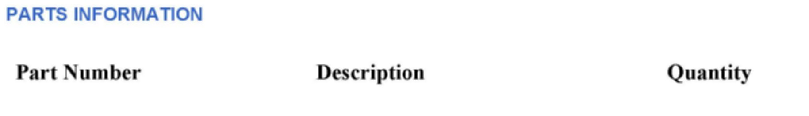
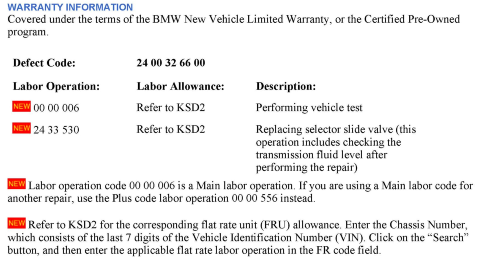

A/T - No Reverse/Forward And DTC's Stored
SI B24 02 10Automatic Transmission
March 2012
Technical Service
This Service Information bulletin supersedes SI B24 02 10 dated September 2010.
[NEW] designates changes to this revision
SUBJECT
GM6 - Diagnosis: No Reverse and/or No Forward Movement Possible
MODEL
[NEW] All with the GM6 Automatic Transmission (GA6L45R) with
AWD (328Xi E90, E91, E92 and the X3) produced to 3/31/2009
SITUATION
The transmission warning lamp is on and the vehicle will not move either in reverse and/or in the forward gears. The engine speed only increases as if the transmission is in the Park or Neutral position.
One or more of the following fault codes may be stored in the EGS:
^ 56B8 - EGS: Ratio Fault R
^ 56B9 - EGS: clutch, gears 3, 5, and R
^ 56BB - EGS: Clutch, gears 1, 4, 5, 6 and R: neutral test
^ 56BD - EGS: Clutch, gears 2 and 6: neutral test
^ 56BF - EGS: Clutch, gears 1, 2, 3 and 4: neutral test
CAUSE
The cause may be due to a broken gear selector valve on transmissions with a serial number less than 593323.
CORRECTION
The test plan for these faults normally will provide a diagnostic code to replace the Mechatronic; however, the gear selector valve is now available as a replacement part.
[NEW] In order to properly confirm the diagnosis, it is recommended to submit a PuMA case to the GM Transmission group with all of the required information, SI B24 24 07.
The GM specialist will analyze the information and can provide authorization for the repair to be performed.

PARTS INFORMATION

WARRANTY INFORMATION